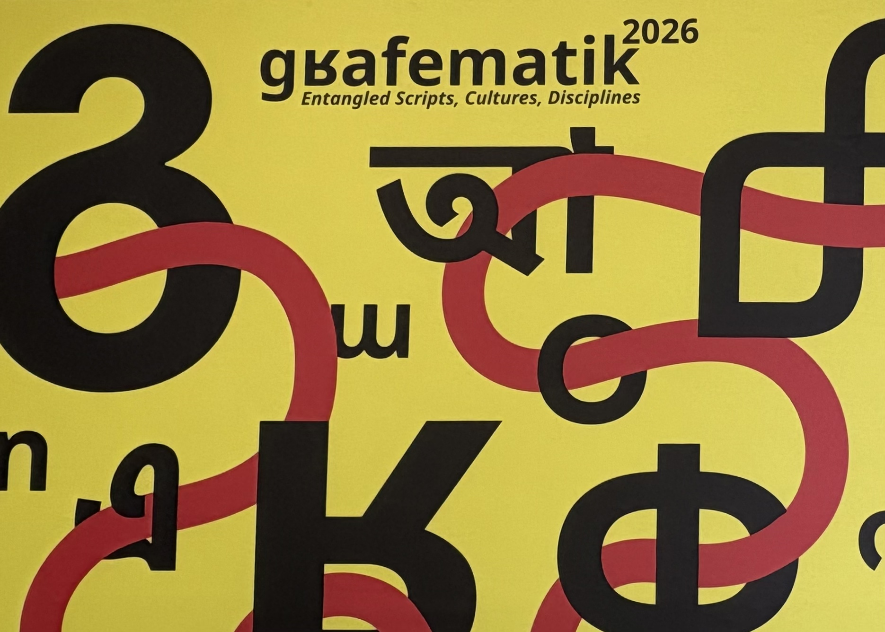
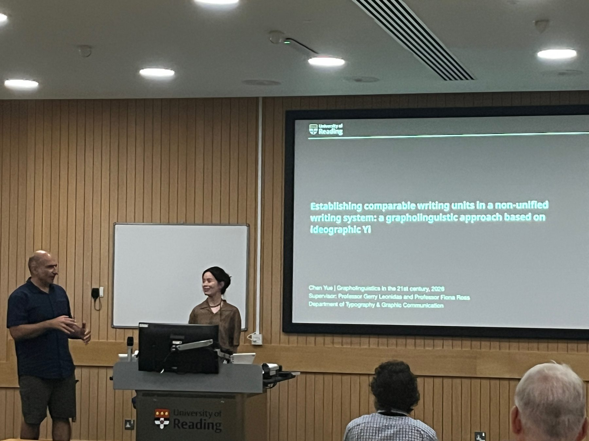

Conference Presentation
/gʁafematik/ 2026
Establishing comparable writing units in a non-unified writing system: a grapholinguistic approach based on ideographic Yi



Conference Presentation
Establishing comparable writing units in a non-unified writing system: a grapholinguistic approach based on ideographic Yi

